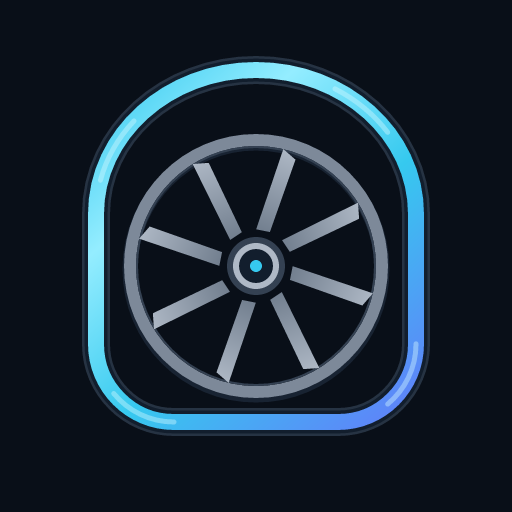

Siphon wheel
Two seconds to prime. Four seconds of continuous flow.
Loading the standalone Lottie asset…
32 px

64 px128 px
Lottie with intro · Lottie loop only · MP4 · SVG + CSS source

The Lottie timeline is 60 fps. Intro: frames 0–119. Repeating segment: [120, 360). The wheel advances 45° each cycle; eight identical vanes make the boundary match exactly. Reduced motion displays a filled, static mark.
Visual review: watch the first fill, then two complete loops. Confirm that water rises on the left, crosses the crest and falls on the right. Inspect the 32 px sample. Approve the colors against the live site before publishing.